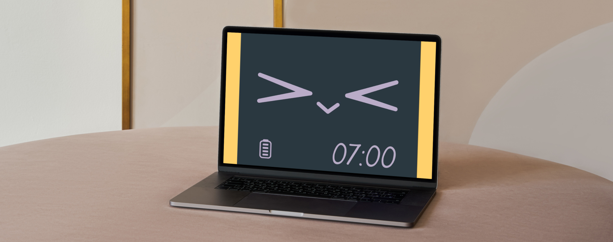
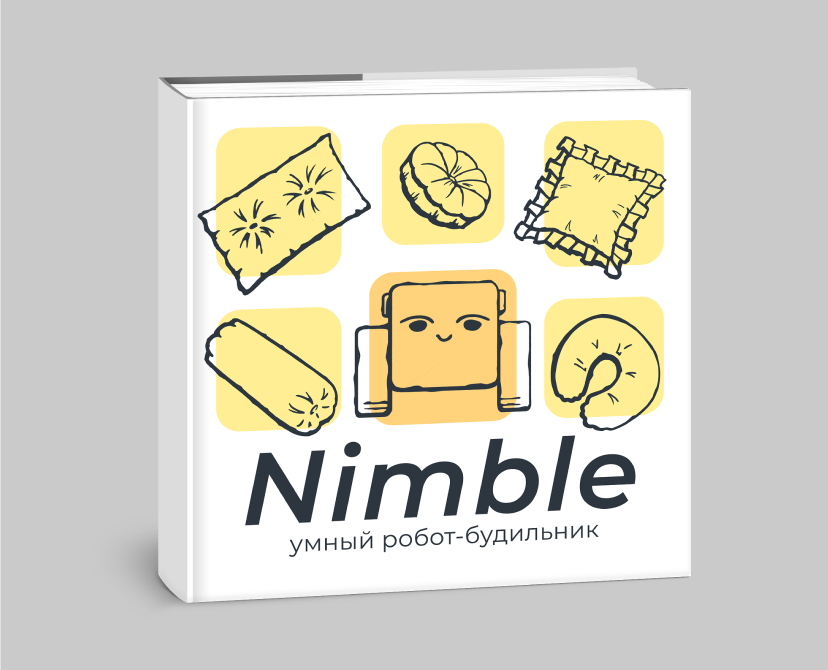
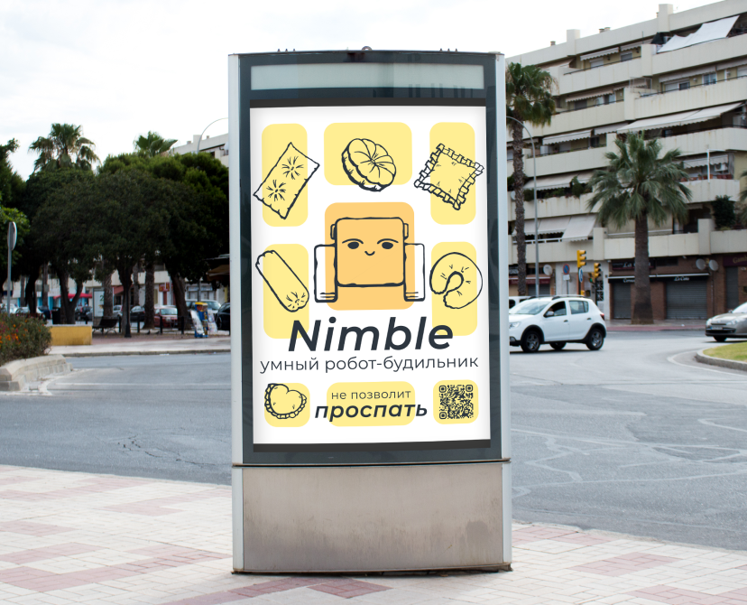
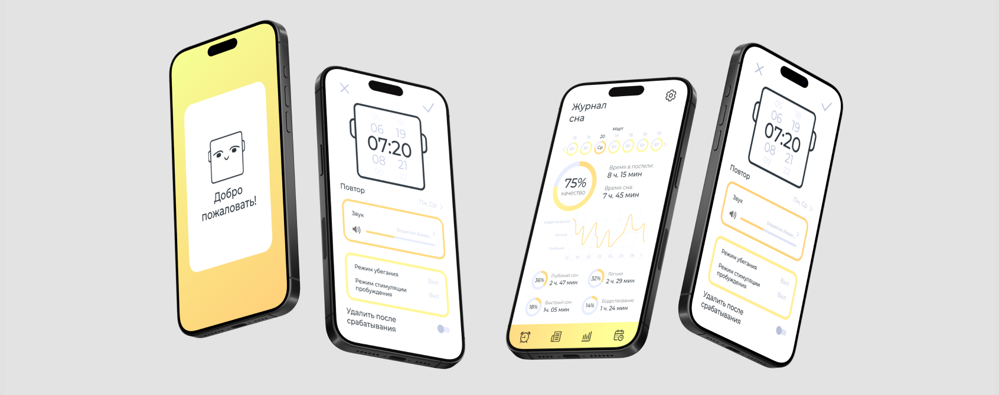

Робот-будильник Nimblet
2024
Суть проекта
Данный проект посвящен разработке умного робота-будильника.
В отличие от традиционного будильника, робот-будильник Nimble может перемещаться в пространстве, тем самым побуждая пользователя двигаться, чтобы проснуться. Наличие искусственного интеллекта позволяет роботу анализировать сон пользователя и менять способ пробуждения в зависимости от качества его сна.
Проделанная работа
В ходе проекта был разработан минималистичный дизайн робота со скруглёнными формами и «ушками»-динамиками, который позволяет ему создавать впечатление дружелюбного, но своенравного питомца. Также был разработан интерфейс приложения, документация к роботу в виде буклета, рекламный плакат и анимационный рекламный ролик.



